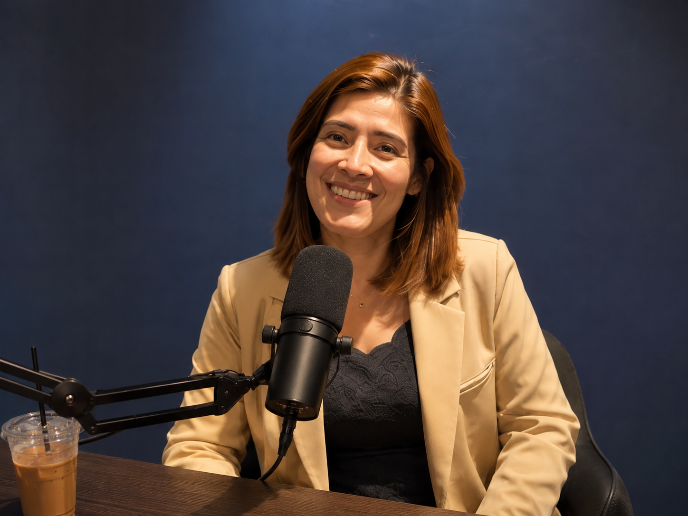
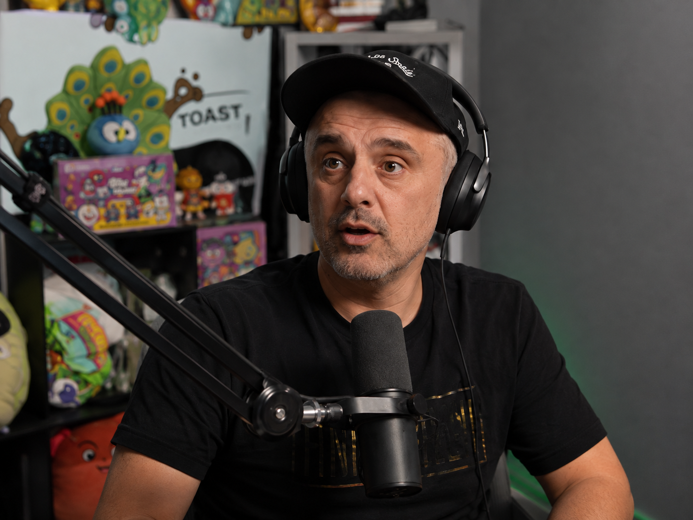

Toasty Studio
The client workspace.
Record a podcast. Run it live. Find the right guest. Build the production with AI. Studio is where the work actually happens.
See Studio modules
Toasty Media
One media company. A production studio for podcasts, live sessions, AI production, and guest finding. A speaker, author, and advisor for the room.


Two ways to work with Toasty
Toasty Studio
Record a podcast. Run it live. Find the right guest. Build the production with AI. Studio is where the work actually happens.
See Studio modulesRicardo Casanova
Stage presence, books, executive advisory, and thought leadership for leaders working through AI, technology, and change.
Explore RicardoClient workspace
Your conversation. Your studio.
Bring guests into the room, direct the session, record the conversation, and keep AI production and guest finding inside the same workspace.



Studio modules
Record + Live
Host the room, bring guests in, manage the scene, and record without a pile of disconnected tools.
AI Production
Research, prepare, script, assemble, and package the media around the conversation, inside the same Studio.
Guest Finder
Discover, qualify, and prepare guests, speakers, and specialists. Guest Finder is a Studio module, not another platform.
.jpg)
Ricardo Casanova
Speaking and stage presence, books, executive advisory, and thought leadership for leaders working through AI, technology, communication, and change.
Work with Ricardo
Keynotes, executive sessions, panels, and moderated conversations built for the room.
The Eloquence Protocol and authored work on communication, AI, trust, and leadership.
Executive advisory around AI adoption, emerging technology, positioning, and complex stakeholders.
Interviews, articles, media, and a point of view people can actually use.